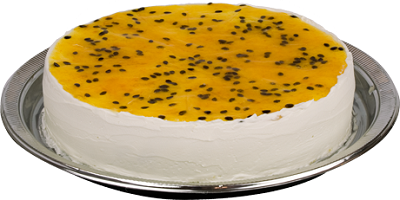

Mousse de Maracujá
Ingredientes
-
MOUSSE:
- 200 ml de suco de maracujá concentrado
- 1 lata de leite condensado
- 1 lata de creme de leite
- 1 envelope de gelatina incolor (12 g) hidratada e derretida conforme as instruções da embalagem
-
CALDA:
- Polpa e sementes de 2 maracujás maduros
- 3 colheres (sopa) de açúcar
- 1/3 de xícara (chá) de água
Modo de Preparo
-
MOUSSE:
- Atenção: Esta receita requer ao menos 4 horas de geladeira.
- Bata no liquidificador o suco de maracujá, o leite condensado e o creme de leite até obter um creme aerado. Incorpore a gelatina e bata por 1 a 2 minutos para misturar bem.
- Distribua em taças individuais e leve à geladeira por 4 a 6 horas ou até ficar consistente. Sirva regadas com a calda.
-
CALDA:
- Leve os ingredientes ao fogo e ferva por 2 a 3 minutos. Utilize fria.